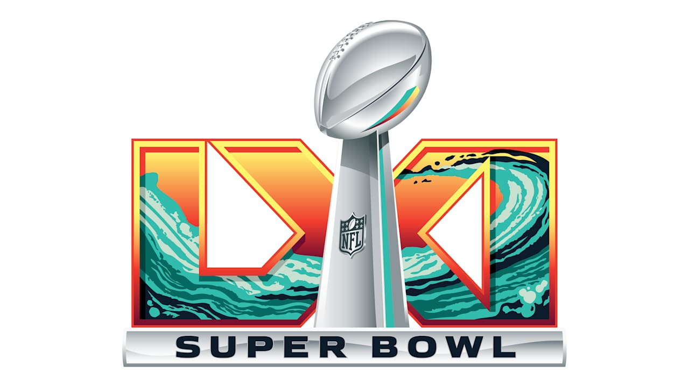
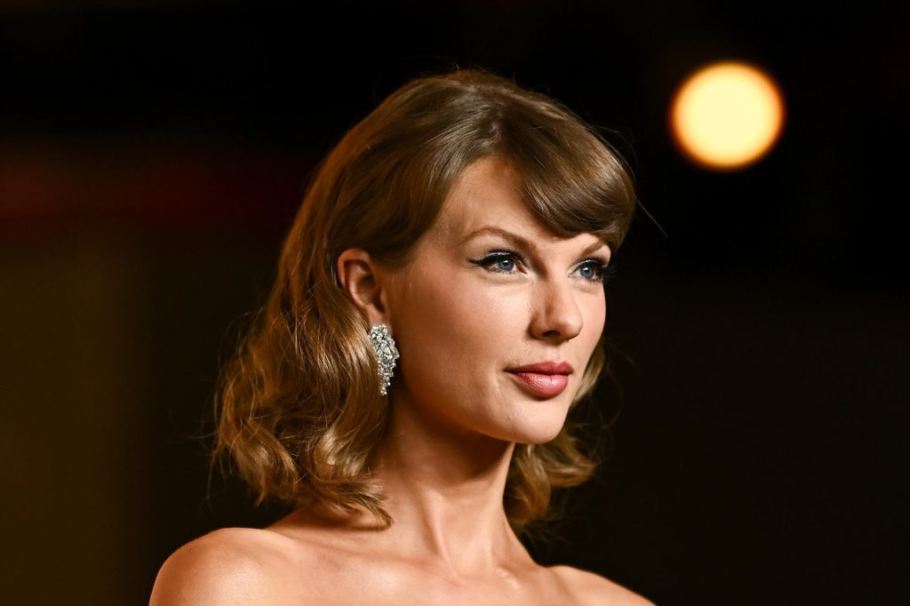
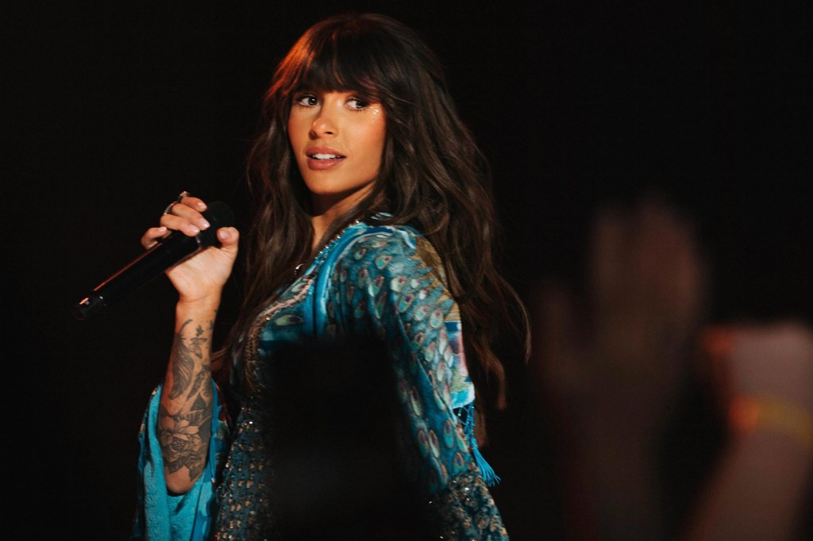
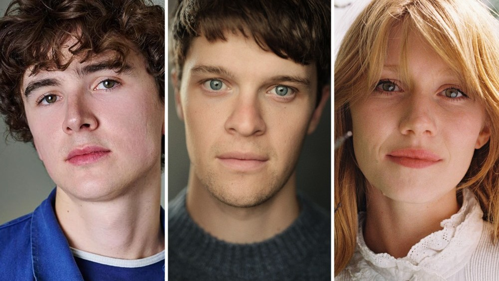

Jay-Z will headline the Super Bowl LXI halftime show

Apple Music, the NFL and Roc Nation announced it during halftime of Monday night’s Cowboys–Eagles game: Jay-Z will perform at Super Bowl LXI at SoFi Stadium on February 14, 2027, airing on ESPN, ABC and Disney+. Roc Nation, which has produced the show since 2019, will executive produce, with Hamish Hamilton directing. Jay-Z’s statement: “Thirty years of music, work, and culture on the world’s biggest stage.”
Roger Goodell said that when the league signed Roc Nation, he had “just one request: that JAŸ-Z take the stage himself one day.” Back then Jay-Z told him that if the deal was about him performing, “we can just end this conversation now.” The timing lines up with his year-long celebration of Reasonable Doubt’s 30th anniversary, and the internet immediately started asking whether Beyoncé will show up.
Taylor Swift roasts Brad Paisley at her Nashville Songwriters Hall of Fame induction

At 36, Swift became the youngest person ever inducted into the Nashville Songwriters Hall of Fame on Monday night, introduced by Brad Paisley, whom she opened for on his 2007 tour. She opened with a bit: “I’m really surprised to see you here, actually, because we’ve been estranged since 2007.” His crime was a tour prank that filled her bus with “thousands” of live crickets, so she “couldn’t sleep” for months and “considered buying a pet lizard.” Then: “I think we’re good now.”
Lainey Wilson sang a stripped-down “Love Story,” and the rest of Swift’s speech was a heartfelt tribute to the Music Row writing rooms that raised her, built around three words: Nashville, songwriters and fame. Fellow inductees included Lyle Lovett, and George Strait received the Career Maker Award.
“Choosin’ Texas” hits a record 25th week at No. 1, as Tate McRae debuts at No. 2

Ella Langley’s “Choosin’ Texas” is back on top of the Billboard Hot 100 for its seventh separate run, extending its all-time record to 25 weeks at No. 1. That’s three more than Mariah Carey’s “All I Want for Christmas Is You” and six more than “Old Town Road” and “A Bar Song,” and the song first came out more than a year ago.
Three songs crash the top five behind it. Tate McRae’s “Housewife” debuts at No. 2 and No. 1 on Streaming Songs, her highest-charting single as a lead artist. Olivia Rodrigo and Chappell Roan’s “Expectations” remix jumps 63–3, and Zach Bryan and Lana Del Rey’s “Lies” enters at No. 4. Swift’s “Patient Zero” slips to No. 5.
HBO’s Harry Potter casts Lily and James Potter, plus a first-ever screen Charlie Weasley

Jasper Talbot and Hannah Chinn will play Harry’s parents, James and Lily Potter, and Harry Gilby joins as Charlie Weasley, Ron’s dragon-wrangling older brother, who never appeared in the films. They join Dominic McLaughlin’s Harry, John Lithgow’s Dumbledore and Paapa Essiedu’s Snape in Season 1, Harry Potter and the Philosopher’s Stone.
The eight-episode season premieres on HBO on Christmas Day, less than two months away, and Season 2 is already filming at Leavesden with Kit Harington as Gilderoy Lockhart.
Bottom of the news
- Olivia Rodrigo’s you seem pretty sad for a girl so in love is officially No. 1 on the full Billboard 200, with Zach Bryan at No. 2 and Taylor Swift’s The Life of a Showgirl at No. 5.
- Godzilla Minus One director Takashi Yamazaki cast Sam Nivola and Nico Parker in his first Hollywood film, Grandgear, for J.J. Abrams and Sony, with Paul Giamatti in talks.
- Oscar winner Amy Madigan joined Viola Davis and Sam Heughan in Paramount+’s corporate-fixer drama Ascent.
- Chris Evans’s volcano thriller Sacrifice is a Netflix hit, and Gladiator II is getting a second life on the service.
- Aaron Sorkin defended Jeremy Strong’s method acting on The Social Reckoning, saying he’s “not a nut.”
- Camille Grammer publicly called out Kelsey Grammer for missing their daughter Mason’s 25th birthday.
- Adam Brody said on Armchair Expert that he regrets his “pedestrian” proposal to Leighton Meester.